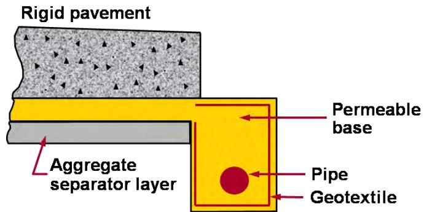
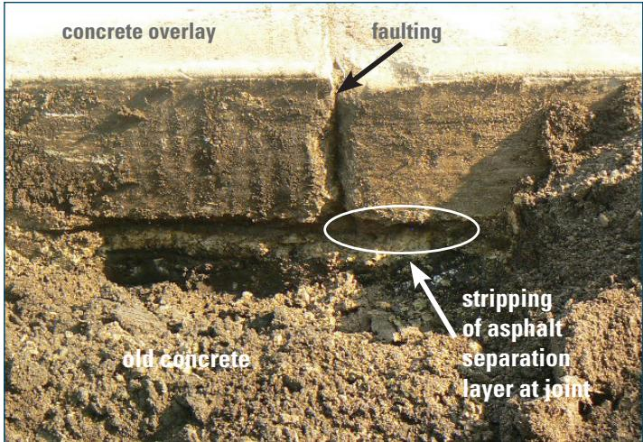
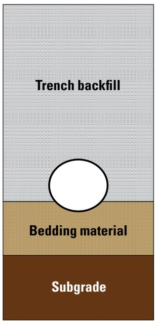
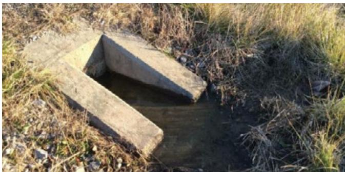
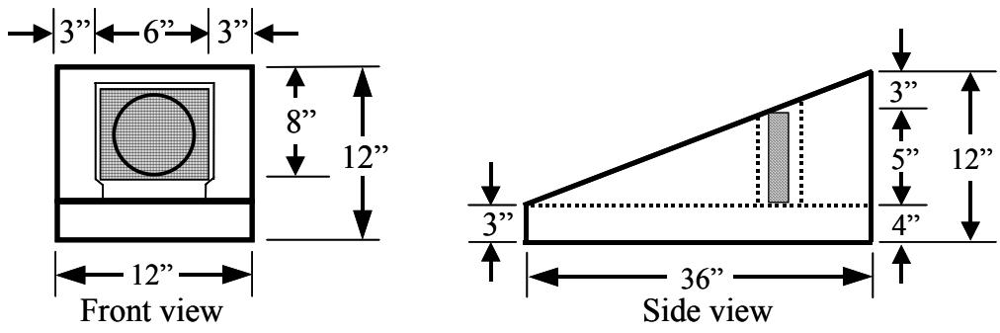

Edge Drain Design and Installation
Edge drain design and installation is an engineering solution that provides a subsurface drainage system to remove excess water infiltrating concrete pavement joints, cracks and base layers, thereby preventing moisture‑related distresses such as pumping, faulting, settlement and heave [1][5][7][8][11][12][13][14]. The system consists of a drainable layer—typically four to six inches thick of open‑graded aggregate wrapped in a geotextile filter—a perforated longitudinal collector pipe positioned about two inches below the subbase/subgrade interface, and regularly spaced outlet conduits that discharge above ditch water levels; it is sized, sloped and protected so that it remains permeable, resists crushing, and conveys water away from the pavement structure [1][5][7][8][11][12][13][14]. Designed for new or retrofitted jointed concrete pavements that are essentially sound, edge drains also improve safety by eliminating standing water and support serviceability through marked outlets, routine inspection and maintenance provisions [1][5][7][8][13][14].
Sources (14)
Purpose and design objectives
The engineering problem addressed by edge‑drain design and installation is the presence of excess water that infiltrates concrete pavement joints, cracks and base layers and remains trapped beneath the structure. The main objective of any subsurface drainage system is to remove excess water from the pavement structure. When water accumulates beneath a pavement structure it can reduce the load‑carrying capacity of the pavement and contribute to the development of critical moisture‑related distresses such as pumping, faulting, and corner breaks. Infiltrated moisture that enters through cracks, joints or surface voids can accumulate in the base course, generating excess pore‑water pressures that cause settlement, heave, pumping, faulting, loss of support and slab cracking. [1][5][7][8][11][12][13][14]
The following figure illustrates the consequences of such trapped moisture by showing evidence of pumping caused by a saturated subgrade or base.
 Evidence of pumping at a transverse joint caused by saturated subgrade moisture. [7]
Evidence of pumping at a transverse joint caused by saturated subgrade moisture. [7]
The image displays a concrete pavement surface with visible dark staining and residue concentrated around the intersection of longitudinal and transverse joints, indicating material loss from beneath the slab.
[1] — Ch. 3 (p. 19), Ch. 4 (p. 25); [5] — 2016 Survey on Concrete Overla… (pp. 21–22); [7] — Ch. 4 (pp. 175–339); [8] — Ch. 7 (pp. 167–183); [11] — 2 Types and Mechanisms of Join… (pp. 24–25); [12] — 5. Condition assessment profile (p. 39); [13] — Ch. 7 (pp. 140–155); [14] — 2. Overview of Thin Concrete O… (pp. 19–20)
Edge drain design and installation must satisfy five interrelated objectives. Functionally, the system is required to remove excess moisture from the pavement structure and convey it away, thereby preventing water from lingering in joints or sub‑layers. Structurally, the collector and its outlets must be sized, sloped, and positioned so that they remain permeable, resist crushing, and discharge above expected ditch water levels, ensuring a stable support condition for the pavement. Durability is attained by incorporating a geotextile filter and construction practices that avoid damage or clogging, allowing the drainage capacity to be retained over the service life. Safety is achieved by eliminating standing water, which reduces hydroplaning risk and improves driver visibility, and by protecting outlets with headwalls and screens to prevent blockage or intrusion. Serviceability is demonstrated through regular inspections, post‑rain observations of active flow, and maintenance provisions (spacing, markers, cleaning) that keep the system functioning throughout the pavement’s design period. [1][5][7][8][11][12][13][14]
The following figure illustrates the typical components that comprise such an edge drain system.

Cross-section of a rigid pavement edge drain system showing the permeable base, aggregate separator layer, and perforated pipe. [11]The figure displays a cross-sectional view of a rigid pavement structure incorporating an edge drainage system at its shoulder. Visible components include the rigid pavement, a permeable base layer, and a perforated pipe encased in geotextile within the drain zone.
[1] — Ch. 3 (p. 19), Ch. 4 (p. 25); [5] — 2016 Survey on Concrete Overla… (pp. 21–22); [7] — Ch. 4 (pp. 175–318); [8] — Ch. 7 (pp. 167–182); [11] — 2 Types and Mechanisms of Join… (pp. 24–25); [12] — 5. Condition assessment profile (p. 39); [13] — Ch. 7 (pp. 140–155); [14] — 2. Overview of Thin Concrete O… (pp. 19–20)
Scope and applicability
Edge‑drain design and installation is appropriate for a broad spectrum of pavement situations, ranging from brand‑new highway sections to rehabilitated existing roads where drainage performance must be enhanced. It is suitable for new jointed concrete pavements—especially those on highways—where water entering the joints can lead to settlement or heave, as well as for existing concrete surfaces that have begun to exhibit early moisture‑related distress such as pumping, joint faulting, or limited cracking but have not yet suffered major structural failure. The method also applies to thin unbonded concrete overlays placed over existing slabs, including widening units or paved shoulders where a difference in overlay thickness creates a potential water‑trapping zone; a non‑woven geotextile separation layer can wick water from the pavement layers and convey it to an outlet beyond the shoulder. For retrofit projects, edge drains are installed beneath a drainable base or subbase that is typically composed of open‑graded aggregate meeting an AASHTO No. 57 gradation with no more than about 15–20 % fines, and a geotextile filter is used to keep fine particles from clogging the system. The longitudinal collector—usually a 3‑ to 4‑inch perforated pipe—runs in a trench spaced at intervals that allow rapid removal of infiltrated water, with outlet drains positioned to discharge into existing ditches. This approach is employed under conditions of moderate traffic volumes, acceptable longitudinal and transverse slopes, adequate ditch depth, and where utilities or severe joint deterioration do not preclude installation. [1][5][7][8][11][12][13][14]
The following figure illustrates typical drainage outlet details for geotextile or HMA separation layers in these applications.
 Cross-section details of Unbonded Concrete Overlay on Concrete (UBCOC) widening units showing drainage outlet configurations. [7]
Cross-section details of Unbonded Concrete Overlay on Concrete (UBCOC) widening units showing drainage outlet configurations. [7]
The figure displays two cross-sectional diagrams for UBCOC widening, illustrating how a separation layer is constructed at the pavement edge to facilitate water removal. One configuration utilizes a nonwoven geotextile separation layer while the other employs an HMA separation layer, both designed to daylight into the ditch foreslope or connect to a working subdrain.
[1] — Ch. 3 (p. 19); [5] — 2016 Survey on Concrete Overla… (pp. 21–22); [7] — Ch. 4 (pp. 318–339); [8] — Ch. 7 (pp. 167–183); [11] — 2 Types and Mechanisms of Join… (pp. 24–25); [12] — 5. Condition assessment profile (p. 39); [13] — Ch. 7 (pp. 140–152); [14] — 2. Overview of Thin Concrete O… (pp. 19–20)
The guides agree that edge‑drain retrofits are limited to pavements that are essentially sound and where moisture ingress is the primary cause of distress. They advise abandoning the edge‑drain approach when any of several conditions exist: (1) advanced structural deterioration—“Advanced structural deterioration – when more than 10% of the slabs exhibit cracking, a high number of transverse joints are spalled, or significant pumping is present, the edge‑drain solution falls outside its effective range.”; (2) base material that will quickly clog the filter—“Base material with excessive fines – if the existing base contains more than 15% fines (material passing the No. 200 sieve), its low permeability restricts water migration and raises the risk of clogging…”; (3) when moisture is not the dominant distress mechanism—“Edge drain retrofits are only advisable when the pavement distress is driven primarily by moisture moving from sand lenses or similar sources into frost‑susceptible subgrade; if the settlement or heave originates from other causes, … a different design solution should be pursued.”; and (4) when the required slope or collector cannot be provided or construction/maintenance cannot be assured—“Edge‑drain retrofits are inappropriate when the existing pavement already incorporates moisture‑resistant features, when the structural condition is poor, when the base material will clog the filter, when proper slope or a compatible collector cannot be provided, or when construction and maintenance cannot be assured.” Under these limitations designers typically select longitudinal pipe drains, French drains, graded filter trenches, dry wells, or full reconstruction. [1][7][8][11][12][13]
[1] — Ch. 3 (p. 19), Ch. 4 (p. 25); [7] — Ch. 4 (pp. 318–339); [8] — Ch. 7 (pp. 167–183); [11] — 2 Types and Mechanisms of Join… (pp. 24–25); [12] — 5. Condition assessment profile (p. 39); [13] — Ch. 7 (pp. 140–154)
Design inputs and requirements
Edge‑drain design begins with a comprehensive site survey that documents current pavement condition, sources of infiltrating water and the erodibility of the base material; it also records geometric factors such as longitudinal and transverse slopes and the depth and condition of roadside ditches. Existing‑condition criteria include limiting surface cracking to less than about five percent of slabs, avoiding extensive spalling of transverse joints, ensuring no active pumping or severe localized distress (edge punchouts, transverse, longitudinal or diagonal cracks), confirming that any cement‑treated base remains intact, and verifying that the existing base contains fewer than roughly fifteen percent fines. Material information focuses on the permeability of the base and its fine‑particle content, while geotechnical considerations are reflected in the assessment of base erodibility and ditch adequacy. The excerpt does not specify traffic or environmental data requirements. [13]
[13] — Ch. 7 (pp. 141–142)
Structural section and dimensions
The guides do not prescribe dimensions for the pavement surface, base, subbase, treated‑soil layer, slab, shoulder, edge‑support element, or any reinforcement. The only dimensional requirements that appear across the sources relate to the drainable components of an edge‑drain system:
- “Drainable layers are typically between 4 in. and 6 in. thick” – a drainable layer incorporated for edge drainage is called for at a thickness of roughly four to six inches.
- When a prefabricated geocomposite edge‑drain (PGED) is used, its own thickness is “typically 0.5 to 1 in. thick” and it can be placed in narrower trenches than conventional pipe systems.
- Collector pipes are “common[ly] to use pipe sizes of 3 in. to 4 in. with an outlet spacing of roughly 250 ft.” – longitudinal edge‑drain pipes are typically three to four inches in diameter, with outlets spaced about 250 feet apart.
- All sources require the top of the drain to be positioned “about 2 in below the subbase/subgrade interface” (or “top of the pipe to be located 50 mm (2 in) below the subbase/subgrade interface”). If frost penetration is a concern, “the trench should be constructed only slightly deeper than the expected depth of frost.”
- Outlets must be set at least six inches above the ditch flow line: “Outlets from the system should be located 6 in. above the ditch flow line” to avoid backflow.
No other size specifications for pavement, base, subbase, treated‑soil, slab, shoulder, edge‑support, or reinforcement are provided. [1][8][13]
[1] — Ch. 3 (p. 19); [8] — Ch. 7 (pp. 170–177); [13] — Ch. 7 (p. 149)
Edge drain design for thin concrete overlays relies on shaping the overlay to shed water, using a cross‑slope or profile change that directs moisture toward the edge drains, and configuring joints to limit water entry by employing narrow single saw cuts or by filling/sealing them. The layer configuration includes an impervious separation layer—either a nonwoven geotextile meeting transmissivity criteria or an open‑graded hot‑mix asphalt—to promote drainage while preventing cement paste intrusion, and when curbs remain in place the geotextile must be tied into the intake walls to connect with the edge‑drain system. These measures together satisfy the design goal of effective water egress and protection of the pavement structure. [14]
The following figure illustrates a potential failure mode in this system, showing stripping of the asphalt separation layer.

Stripping of asphalt separation layer at a joint in an old concrete pavement. [14]The image displays a cross-section of a pavement structure featuring a ‘concrete overlay’ atop ‘old concrete’, separated by a dark, granular layer identified as an asphalt separation layer. A vertical displacement labeled ‘faulting’ is visible at the joint between two slabs of the overlay.
[14] — 2. Overview of Thin Concrete O… (pp. 19–20)
Materials and mixture design
Edge‑drain designs must define a complete material package that includes a drainable subbase or layer, a filtration medium, a geotextile filter, a longitudinal collector pipe, and an outlet conduit. The drainable layer shall be 4 in to 6 in thick and formed from open‑graded aggregate such as #57 or #67 (or AASHTO No. 57) without sand; optional cement stabilization of at least 250 lb/yd³ may be used. Existing base material should contain no more than about 15 % fines (No. 200 sieve) to retain permeability, and trench backfill must meet an AASHTO No. 57 gradation or consist of clean coarse sand placed in approximately six‑inch lifts and compacted by flushing with water (maximum aggregate size 0.75 in). Backfill density shall reach at least 95 % of the maximum dry density (AASHTO T‑99) and its permeability must equal or exceed that of the underlying base.
The filtration medium is wrapped in a geotextile fabric; acceptable fabrics are woven or non‑woven polypropylene or nylon mats that satisfy FHWA filter criteria, Holtz et al. requirements, or transmissivity criteria (Harrington and Fick). The geotextile openings must be smaller than the surrounding fine particles to prevent clogging while allowing water flow.
The longitudinal collector may be a perforated pipe of 3‑4 in diameter, fabricated as flexible corrugated polyethylene (CPE) or smooth rigid PVC, conforming to AASHTO M 252 or M 278 (Class 50). Maximum longitudinal elongation during placement is limited to 5 %. Prefabricated geocomposite edge drains (panel or fin drains) are also permitted; panels are 0.5–1 in (13‑25 mm) thick, must meet ASTM D 6244‑98 vertical compression criteria, and are installed with the top about two inches above the pavement surface and at least six inches of backfill cover before compaction.
Outlet conduits shall be 4‑in (100‑mm) stiff, non‑perforated smooth‑walled PVC or HDPE pipe, laid on a minimum slope of 3 % (0.03 m/m), with a headwall and positioned at least six inches above the ten‑year ditch flow line; minimum cover over the pipe is 150 mm (6 in) before compaction.
When an unbonded concrete overlay is used, a non‑woven geotextile separator or an open‑graded hot‑mix asphalt layer may serve as the drainage separator; the HMA mix must be designed and placed to prevent water infiltration and binder stripping. [1][8][11][12][13][14]
[1] — Ch. 3 (p. 19); [8] — Ch. 7 (pp. 168–180); [11] — 2 Types and Mechanisms of Join… (pp. 24–25); [12] — 5. Condition assessment profile (p. 39); [13] — Ch. 7 (pp. 145–154); [14] — 2. Overview of Thin Concrete O… (pp. 19–20)
Drainable layers are typically between 4 in. and 6 in. thick and often use an open‑graded aggregate such as a #57 or #67 with no sand. AASHTO No. 57 gradation aggregate generally provides sufficient permeability and stability for use as a nonstabilized backfill material. AASHTO No. 57 gradation should provide sufficient permeability and stability for use as nonstabilized backfill material. Coarse sand, placed in 6 in. lifts, has been successfully used as backfill material and compacted by flushing or puddling with water. Proper compaction of the backfill material is important to avoid settlement over the edgedrain, yet overcompaction should also be avoided to prevent damage to the drain itself. damage from backfilling can be avoided by compacting the sand backfill using water puddling. A minimum density of 95 percent Standard Proctor (AASHTO T‑99) is recommended. filled with stabilized or nonstabilized open‑graded material. the opening size in the selected geotextile must be smaller than the size of the fine materials. Geotextiles should therefore be designed considering both the subbase and subgrade soils using the filter criteria in the FHWA geosynthetics design manual (Holtz et al. 1998), partially lined with geotextile fabric (in areas where it comes in contact with either the subbase or subgrade materials) to prevent the infiltration of fines. a nonwoven geotextile that meets certain transmissivity requirements (Harrington and Fick 2014). increasingly rigid, smooth‑walled plastic pipe is being used instead because it lies flat in the trench and is less susceptible to crushing. It is common to use pipe sizes of 3 in. to 4 in. with an outlet spacing of roughly 250 ft. The backfill material should be placed using chutes or other means to avoid dropping material onto the pipe from the top of the trench. The ACPA suggests at least 250 lb/yd3 . or an open‑graded hot‑mix asphalt (HMA) can be used as an impervious separation layer that promotes drainage. If an HMA separation layer is not designed and constructed properly, however, water may infiltrate and then become trapped in the HMA layer, resulting in stripping, or separation of the asphalt from the aggregate. [1][8][13][14]
The following figure illustrates a geotextile-lined trench with CPE pipe.

Cross-section of a corrugated polyethylene pipe installed in bedding material within a trench. [8]The figure displays a vertical cross-section showing a white circular pipe resting on a tan layer labeled “Bedding material” and surrounded by gray “Trench backfill” above the subgrade. This installation method corresponds to the practice of placing drainage pipes in a groove within bedding material, which is a specific step in edge drain design and installation.
[1] — Ch. 3 (p. 19); [8] — Ch. 7 (pp. 170–179); [13] — Ch. 7 (pp. 145–154); [14] — 2. Overview of Thin Concrete O… (pp. 19–20)
Structural details and interfaces
Edge‑drain installations begin by addressing pavement joints: “any slab showing pumping or faulting must be subsealed and the existing joints resealed, restoring their load‑transfer capability before drainage components are placed.” The drain system is built in a trench that serves as the structural transition between pavement and pipe; the guides specify “a trench filled with filter‑graded aggregate wrapped with a geotextile, longitudinal (perforated) pipe, and outlet (non‑perforated) pipe.” Water collected by the perforated conduit is conveyed to the surface through “Water is discharged from the pipe edgedrain into the nearest ditch through regularly spaced transverse outlet pipes connected to the longitudinal drainage pipe.” To ensure the infiltrating water reaches the edge drain, a dedicated moisture outlet is provided: “1×2 ft deep drainage trench at back of curb designed to allow water to reach outer edge drain.” These elements together define the required joint treatment, transition media, pipe connections, and dimensional details for a functional edge‑drain system. [1][5][8][11][12][13][14]
The following figure illustrates a recommended design for retrofitted pipe edge drains.
 Cross-section of a retrofitted pipe edge drain system installed at the pavement shoulder. [13]
Cross-section of a retrofitted pipe edge drain system installed at the pavement shoulder. [13]
The figure displays a cross-sectional view of a pavement structure featuring a longitudinal drainage trench located along the shoulder. A perforated collector pipe is positioned within an aggregate-filled trench that is wrapped in geotextile fabric to separate it from the surrounding soil and subbase layers. This configuration illustrates a pipe edge drain system designed to remove excess water from the pavement structure.
[1] — Ch. 4 (p. 25); [5] — 2016 Survey on Concrete Overla… (pp. 21–22); [8] — Ch. 7 (pp. 170–182); [11] — 2 Types and Mechanisms of Join… (pp. 24–25); [12] — 5. Condition assessment profile (p. 39); [13] — Ch. 7 (pp. 145–155); [14] — 2. Overview of Thin Concrete O… (pp. 19–20)
The interfaces are treated as deliberately separated zones. Between the concrete slab and the drainable base the guides stress that “the open‑graded nature of a drainable layer, care should be taken not to allow cement paste from the concrete pavement slab to penetrate this layer and cause a bond” and that “the use of a geotextile between the drainable layer and surrounding layers is recommended.” The geotextile must meet filter criteria: “To be effective, the opening size in the selected geotextile must be smaller than the size of the fine materials.” The drainable layer itself is described as “typically between 4 in. and 6 in. thick and often use an open‑graded aggregate such as a #57 or #67 with no sand.”
At the junction with subbase or subgrade, the trench is “partially lined with geotextile fabric in areas where it comes into contact with either the subbase or subgrade materials,” and more generally “The trench should be lined with a geotextile to prevent migration of fines from the surrounding soil into the drainage trench.” Backfill behind the collector must be “at least as permeable as the base material” and may be “filled with stabilized or nonstabilized open‑graded material” such as “AASHTO No. 57 gradation should provide sufficient permeability and stability for use as nonstabilized backfill material.” The collector is positioned with its crown “2 in. below the subbase/subgrade interface” and protected by “a minimum six‑inch cover … before compaction to protect the core while maintaining structural support.”
Collector selection follows the compatibility rule: “It is important that the selected collector type be compatible with the existing pavement structure as well as with the surrounding materials.” Failure to seat the drain against the base is highlighted: “failure to place the geocomposite edge drain against the base layer was cited as the primary cause of failure.”
Where the pavement meets a curb, a dedicated moisture outlet is provided: “1×2 ft deep drainage trench at back of curb designed to allow water to reach outer edge drain.” For widened overlays or shoulders, the design calls for “provide a drainable subbase and a drainage outlet under the widening unit/ paved shoulder at the time of the overlay” together with “a non‑woven geotextile fabric separation layer provides the opportunity to wick water from the pavement layers and send it to an outlet beyond the shoulder.” When curbs are removed, the geotextile can be tied into the underdrain: “If the curb is removed for construction of an unbonded overlay, the geotextile layer … can be drained into an existing or retrofitted underdrain system.” If curbs remain, the layer must be linked to intake walls: “If the curb is not removed, the geotextile separation layer will need to be tied into the wall of the intakes on the project.”
Alternative separation media are permitted: “nonwoven geotextile that meets certain transmissivity requirements (Harrington and Fick 2014)” or “open‑graded hot‑mix asphalt (HMA) can be used as an impervious separation layer.” Finally, proper backfill placement and compaction practices such as “drain clogging can be minimized by using the installation detail … and that damage from backfilling can be avoided by compacting the sand backfill using water puddling” are required to preserve the integrity of all interfaces. [1][5][8][12][13][14]
[1] — Ch. 3 (p. 19); [5] — 2016 Survey on Concrete Overla… (pp. 21–22); [8] — Ch. 7 (pp. 170–180); [12] — 5. Condition assessment profile (p. 39); [13] — Ch. 7 (pp. 142–154); [14] — 2. Overview of Thin Concrete O… (pp. 19–20)
Drainage, environment, and accessibility
The design of edge drains begins with a site‑specific assessment of climate, precipitation patterns and base‑course permeability (fines ≤ ≈15%). The primary source of moisture is surface infiltration through cracks, joints and shoulder seams; secondary sources such as irrigation, shallow ditches or high groundwater tables are identified and incorporated into the layout. A subsurface drainable layer about four to six inches thick made of open‑graded #57 or #67 aggregate without sand is placed behind the curb or shoulder, wrapped in a geotextile whose openings are smaller than the surrounding fines; cement paste from the slab is kept out and, if needed for stability, at least 250 lb/yd³ of Portland cement may be added. The trench—typically about 12 in wide and at least 8 in deep—is sloped toward a ditch at a grade of at least 8% so that water moves quickly out of the pavement structure. A longitudinal perforated pipe, three to four inches in diameter, is positioned with its top about two inches below the subbase/subgrade interface; outlet drains are placed at the lowest points of the longitudinal profile, protected from crushing or submersion, with outlet inverts set at least six inches above the projected ten‑year ditch‑flow elevation and spaced roughly 250–300 ft. The system’s performance is verified by functional testing (e.g., water trucks) and requires regular inspection, cleaning of filters and outlets, and protection such as headwalls or flap valves to guard against back‑flow during high‑flow events. By collecting infiltrated water and removing it promptly, the retrofit minimizes the time that underlying layers remain saturated, thereby reducing moisture‑related distress such as settlement, heave and punchouts in freeze‑thaw climates. [1][5][7][8][11][12][13][14]
The following figure illustrates the effectiveness of this approach by showing a before-and-after comparison of the pavement structure with and without the installed longitudinal edge drain.
 Schematic of a longitudinal edge drain installation reducing the flow path within a granular base layer. [8]
Schematic of a longitudinal edge drain installation reducing the flow path within a granular base layer. [8]
The figure displays a cross-section of pavement layers, including a surface slab and a granular base containing water droplets. Arrows indicate that the addition of an edge drain system creates a “New shortened flow path” for moisture to exit through an outlet, rather than traveling horizontally through the base.
[1] — Ch. 3 (p. 19); [5] — 2016 Survey on Concrete Overla… (pp. 21–22); [7] — Ch. 4 (pp. 175–339); [8] — Ch. 7 (pp. 167–183); [11] — 2 Types and Mechanisms of Join… (pp. 24–25); [12] — 5. Condition assessment profile (p. 39); [13] — Ch. 7 (pp. 140–155); [14] — 2. Overview of Thin Concrete O… (pp. 19–20)
The guides agree that edge‑drain design must first establish proper pavement geometry so water is directed away from the structure; “The surface of the pavement, shoulders, and surrounding right of way should be sloped to allow water to be carried away.” Longitudinal and transverse slopes also have to meet acceptable limits, as noted: “Edge drain design must verify that the pavement’s longitudinal and transverse slopes are within acceptable limits,”. The drainage trench behind the curb is required to provide sufficient capacity, with a typical cross‑section of one foot wide by two feet deep (“1×2 ft deep drainage trench”). Accessibility and safety are addressed through outlet treatment: “dual independent pipe outlets marked 24 to 36 in. above ground, with clearly identified outlet markers to locate transverse outlets for rapid inspection and flushing,” and the manual reinforces that each outlet be connected before back‑filling, protected with headwalls, and clearly identified, using markers placed 610–914 mm above ground (“Each outlet must be connected before back‑filling, protected with headwalls, and clearly identified. Markers 610–914 mm above ground provide visual cues for inspection and maintenance”). Together these geometric grading, trench sizing, and marked, protected outlets satisfy the integrated set of geometric, safety, accessibility, and user requirements for edge‑drain systems. [1][5][7][8][13][14]
The following figure illustrates a typical outlet pipe configuration.

Concrete edge drain outlet structure holding standing water due to inadequate ditch grade. [8]The image displays a concrete headwall structure at the end of an underground drainage pipe, which is situated in a grassy roadside ditch. Water is visibly pooled inside and immediately around the outlet, indicating that the system is unable to discharge flow effectively. This visualizes a failure in edge drain design where inadequate ditch grade prevents water from flowing away, resulting in an “outlet pipe configuration” that holds water rather than draining it.
[1] — Ch. 3 (p. 19); [5] — 2016 Survey on Concrete Overla… (pp. 21–22); [7] — Ch. 4 (p. 175); [8] — Ch. 7 (pp. 168–182); [13] — Ch. 7 (pp. 141–155); [14] — 2. Overview of Thin Concrete O… (pp. 19–20)
Verification and expected performance
The completed edge‑drain design is checked through a series of field verifications that together address compliance, constructability, performance, and consistency with project requirements. First, “The capacity of the drain must be checked and an adequate slope must be used to move the water to the outlets.” Pipe sizing and spacing are confirmed by “It is common to use pipe sizes of 3 in. to 4 in. with an outlet spacing of roughly 250 ft.” and “In general, the outlet spacing should not exceed 76 to 91 m (250 to 300 ft) in order to permit cleaning.” The use of filtration fabric is verified by “Geotextile fabric is also commonly used with edge drains to keep them from clogging.” Alignment and grading are inspected with “maintain correct line and grade when installing longitudinal edgedrains” and “maintain correct line and grade.” Trench depth control is checked by “trench depth be deep enough to allow the top of the drain to be located 2 in. below the subbase/subgrade interface” and “top of the drain be located 50 mm (2 in) below the subbase/subgrade interface.” Cover requirements are confirmed with “minimum of 6 in. of cover over the drainage pipe,” “a minimum of 150 mm (6 in) of cover over the drainage pipe is recommended before compacting,” and back‑fill density is verified by “goal of a minimum density of 95% as measured by a standard Proctor test (AASHTO T 99)” and “A minimum density of 95 percent Standard Proctor (AASHTO T-99) is recommended.” Compaction quality is demonstrated using “degree of compaction can be verified easily using a DCP” and “the degree of compaction can be verified easily using a dynamic cone penetrometer (DCP).” Pipe elongation limits are checked by both “The typical limit for tolerable longitudinal elongation of CPE pipes is 5%” and “the typical limit for tolerable longitudinal elongation of CPE pipes is 5 percent (NHI 1999).” Outlet geometry and protection are confirmed with “Outlets from the system should be located 6 in. above the ditch flow line,” “The outlet end should be placed at least 150 mm (6 in) above the 10-year ditch flow line and protected with a headwall and splash block,” “Headwalls are recommended at outlet locations because they protect the outlet pipe from damage, prevent slope erosion, and facilitate the location of outlet pipes,” and “concrete headwalls with permanent anti‑intrusion protection (screens).” Material specifications are verified by “The outlet pipe should be a 100-mm (4-in) diameter stiff, non-perforated smooth-walled PVC or high‑density polyethylene (HDPE) pipe with minimum slope of 0.03 m/m.” Functional performance is tested by “locating and inspecting drainage outlets to ensure that they are properly located at low spots in the longitudinal pavement profile,” confirming they are “not crushed, submerged, or otherwise impede the outflow of pavement moisture,” and conducting a “functional test of the drainage system could include the discharge of water trucks on the pavement surface and monitoring outlets to check their function and drain time.” Ongoing condition is assessed by “Drainage layers and edge drains must be inspected to determine if they continue to allow water to leave the pavement,” and maintenance provisions are verified through “If longitudinal drains have been used, the pipes can be cleaned,” “placement of outlet markers, 610 to 914 mm (24 to 36 in) above the ground and suitably marked,” and “specifying proper connectors to allow periodic flushing or jet rodding of the edge drain system.” [1][7][8][13]
The following figure illustrates a precast headwall equipped with a rodent screen.

Precast headwall with rodent screen (FHWA 1992). [13]The figure displays the front and side elevations of a precast concrete structure designed to protect an outlet pipe. It features a rectangular enclosure with internal dimensions that accommodate a circular rodent screen, which is installed within the vertical riser section.
[1] — Ch. 3 (p. 19), Ch. 4 (p. 25); [7] — Ch. 4 (p. 175); [8] — Ch. 7 (pp. 177–178); [13] — Ch. 7 (pp. 150–155)
Across the guides, edge‑drain retrofit designs are expected to deliver three primary performance outcomes: (1) a measurable extension of functional service life—“proper pavement drainage can extend pavement life from several years to more than twice that of a conventional "undrained" pavement” and “An additional 5 to 10 years of additional service life was attributed to the installation of retrofitted edge drains.”; (2) a substantial reduction in moisture‑related distresses such as pumping, joint faulting and cracking—“edge drains are highly effective in reducing pumping and faulting”, “edge drains were indeed effective at reducing the faulting in JPCP by 88 percent”, and lower fault depths and slower fault‑rate development observed in longitudinal studies; and (3) reliable drainage operation demonstrated by low outlet‑failure rates—“the number of edge drain outlet failures decreased from 20 percent to approximately 2 percent by the year 2000”. Performance is measured through (a) longitudinal field studies that compare drained sections with control sections—“time-series performance data for pavements with and without retrofitted edge drains were examined”, (b) periodic visual or video inspections of the conduit—“video inspections of in-service edge drains to assess their performance”, (c) quantitative surveys of fault depth, joint condition and crack incidence conducted before installation and at regular intervals thereafter, and (d) verification of construction tolerances: pipe elongation ≤5 %—“The typical limit for tolerable longitudinal elongation of CPE pipes is 5 percent”, minimum cover ≥150 mm (6 in.)—“a minimum of 150 mm (6 in) of cover over the drainage pipe is recommended before compacting”, and backfill density ≥95 % Standard Proctor—“A minimum density of 95 percent Standard Proctor (AASHTO T‑99) is recommended.”. The degree of compaction is confirmed with a dynamic cone penetrometer—“the degree of compaction can be verified easily using a dynamic cone penetrometer (DCP).” When these metrics show extended service life, reduced distress rates, and sustained drain functionality, the edge‑drain design is considered successful. [8][13]
[8] — Ch. 7 (pp. 177–178); [13] — Ch. 7 (pp. 140–153)